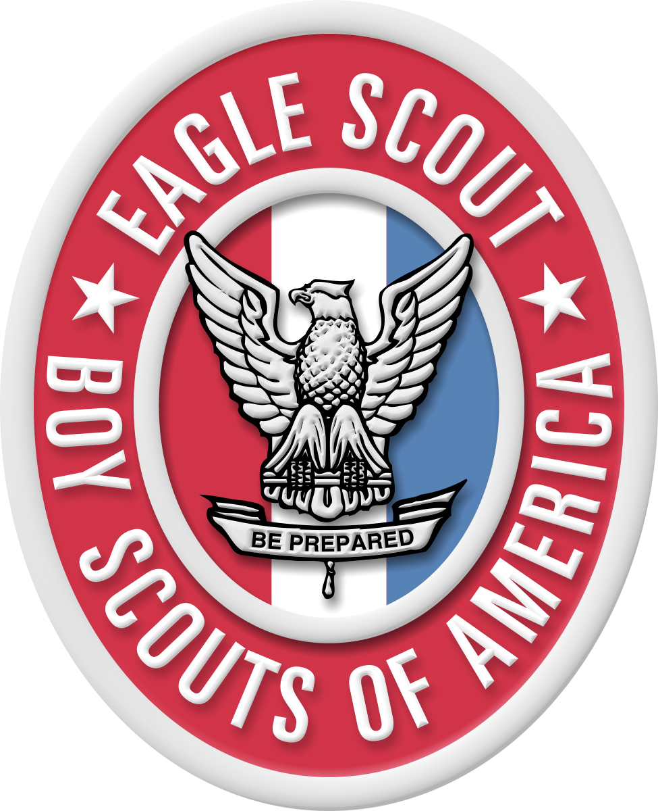

RESUME
This section is dedicated to my employment history and information regarding the positions I have held. Here are three of the positons that I take exception pride in. Click on any of the three to find out more information about those jobs and their responsibilites. If you would like you can follow the links below to either see a full list of experience or download a simplified one page CV with some general information about me.
IBM
I am currently employed with IBM, here I work with WAS (Websphere Application Servers) as a support technicain. I have had the pleasure of working with the WASADM team where our primary objective is debugging and assisting with errors with WAS installation, node/cluster management, other administrative application functings.
Army

From 2011 to 2017 I served with the United States Armed Forces in the Army National Guard. My acting role as a Solider was a Computer and Detection Systems Technician (MOS: 94F), my job consisted of maintaining sensitive elecetrical equipment and their various components. This included equipment such as night vision goggles, radios, chemical detectors, radiation detectors, and other computer based systems.
Boy Scouts
For two years I worked with the Boy Scouts of America as an Instructor, and Councler. My duties during this time were to instruct young scouts in practical skills to be used in the real world this primarly included First Aid, Emergency Prepardness, Civic Duties, and Communications. Along with teaching I was responible for maintaining camp grounds and protecting the envoirment within the standards of Leave No Trace.